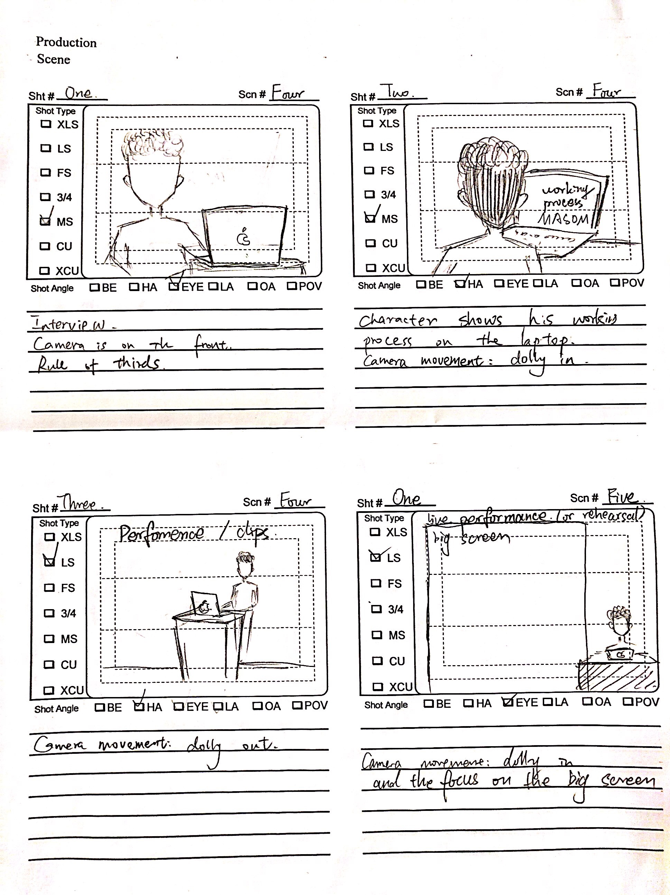

REVIVE Documentary
About REVIVE
REVIVE is a documentary that introduces a live audio-visual performance project called Revive which is created by Metacreation Lab. This was a group project which lasted around 3 months from researching and choosing a topic to finalize the complete documentary film.
My Role
Lighting, Audio Recording, Video Editing and Visual Effect
Pre-Production
In the beginning, we did a lot of research to determine the potential topic, and then we started thinking the main content that we want to convey and the narrative of the story as well as the possible visual treatment which is the mood board and combined them into the treatment document.

After the first meeting with our client, we adjusted some parts of the visual treatment based on his feedback. Then we generated the storyboard to show some basic ideas about the camera angle, shot type and camera movement.
Production
Before the actual shooting date, we rehearsed for the lighting position, camera angles, and audio recording to avoid the mistake while shooting and ensure the shooting process would proceed smoothly. During the shooting date, I was mainly working on setting the lighting and recording the audio and assisted another team member with shooting the close-up shot.

Post-Production
There were around 30 video clips and 20 audio files we worked on totally. We used Adobe Premiere to edit the clips and audio and the generated the first draft. After several revises, we used Adobe After Effect to create the VFX for the final video to add more visual experience.